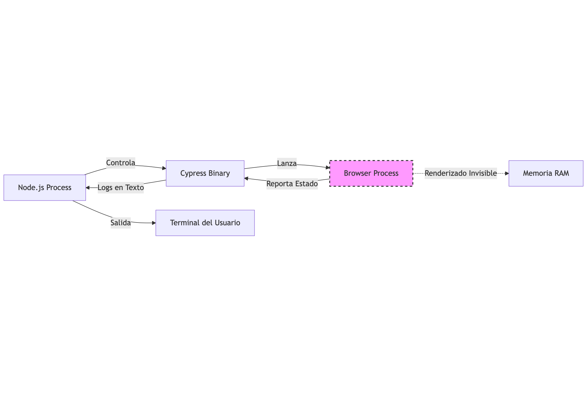
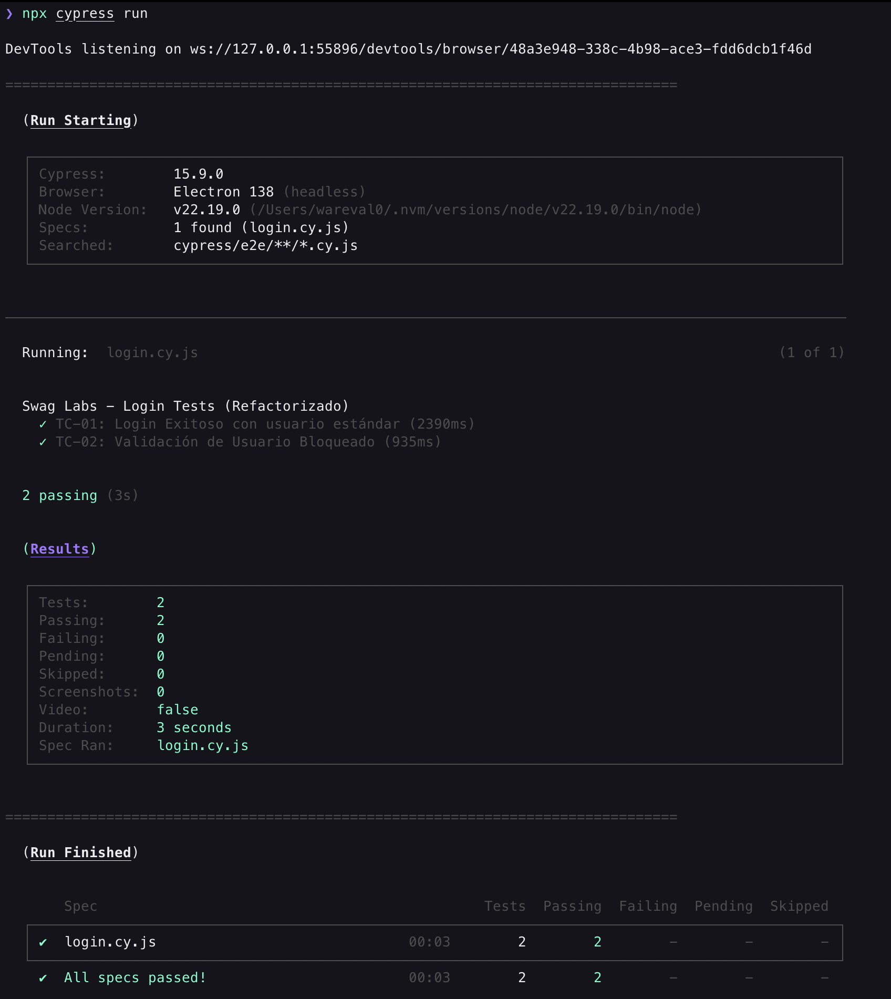
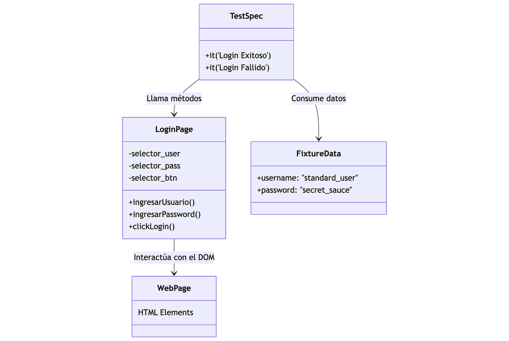
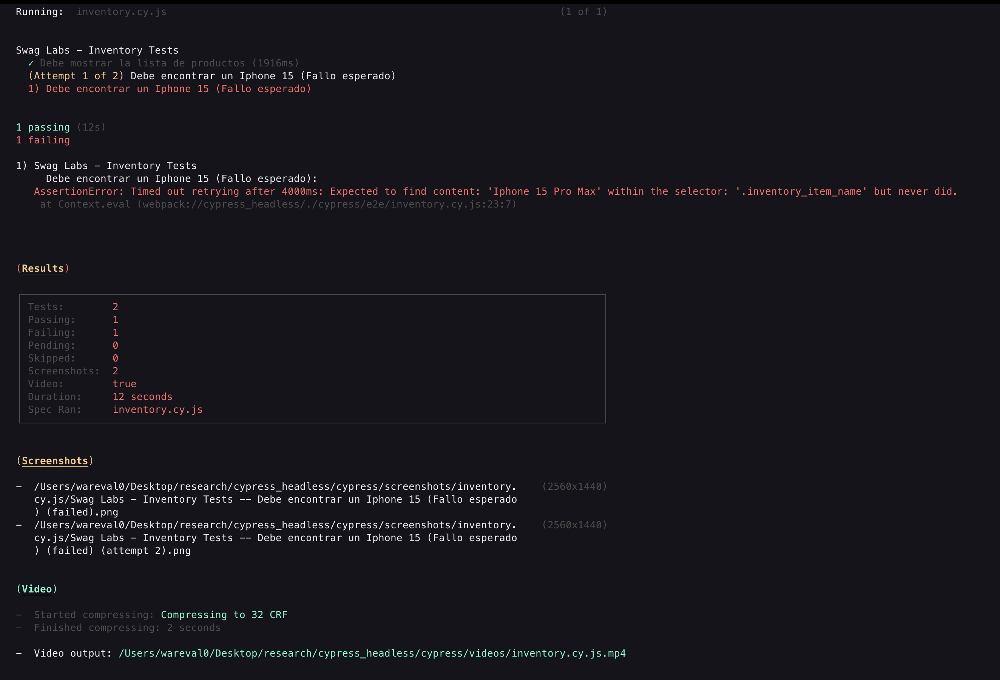
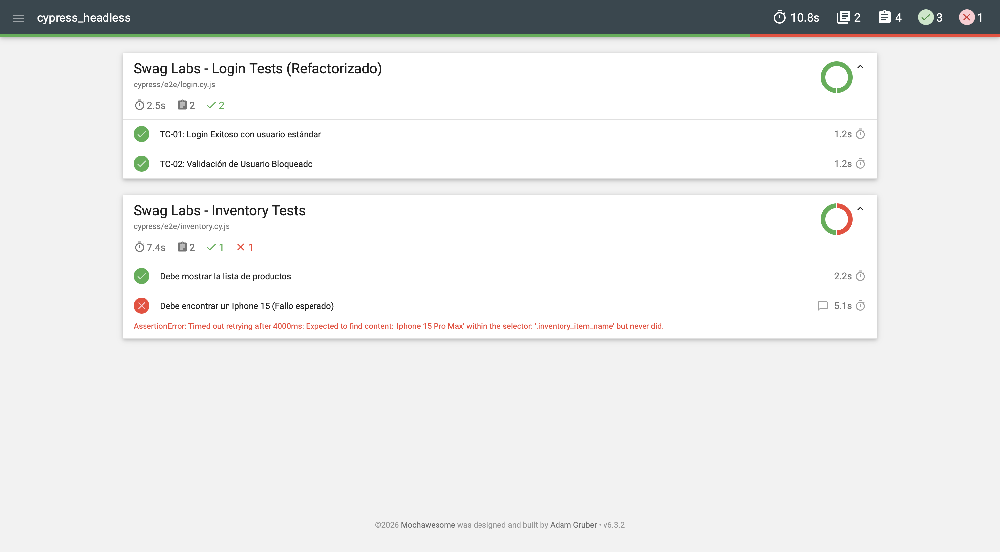

La mayoría aprendemos a automatizar usando el "Test Runner" (esa bonita interfaz gráfica donde ves el navegador moverse). Pero seamos realistas: los servidores de Integración Continua (CI/CD) no tienen ojos (monitores).
En esta primera fase, vamos a configurar un entorno Linux desde cero (tal como sería un contenedor de Docker en Jenkins o un Runner de GitHub Actions) y ejecutaremos nuestra primera prueba sin ver absolutamente nada visualmente, confiando plenamente en los logs.
Concepto Clave: ¿Qué es Headless Testing? Cuando ejecutas Cypress en modo headless, el navegador (Chrome, Electron, Firefox) sí se ejecuta, pero no dibuja la interfaz gráfica (UI) en pantalla. Todo ocurre en memoria.

En este Codelab, aprenderás a configurar y ejecutar pruebas automatizadas profesionales utilizando Cypress en modo Headless (sin interfaz gráfica). Simularemos el flujo de trabajo real de un Ingeniero de Automatización trabajando con servidores de Integración Continua (CI).
Lo que aprenderás:
Lo que necesitas:
En la terminal, corre el siguiente comando:
npm init -y
npm install cypress --save-dev
Nota: Usaremos el flag --save-dev porque Cypress es una herramienta de desarrollo/testing, no una dependencia que tu aplicación necesite para funcionar en producción.
En la raíz del proyecto, crea un archivo llamado cypress.config.js. Este será el cerebro de nuestras pruebas.
Copia y pega el siguiente código:
const { defineConfig } = require("cypress");
module.exports = defineConfig({
e2e: {
// URL base de nuestra aplicación (Swag Labs)
baseUrl: 'https://www.saucedemo.com',
// Patrón para encontrar nuestros archivos de prueba
specPattern: 'cypress/e2e/**/*.cy.js',
// Deshabilitamos video por defecto (lo activaremos luego)
video: false,
chromeWebSecurity: false,
setupNodeEvents(on, config) {
// listeners
},
},
});
Además, crea el archivo e2e.js en la carpeta cypress/support
Déjalo vacío, solo hace parte del Set Up de Cypress
Cypress necesita una estructura de carpetas específica.
cypress en la raíz.e2e.cypress/e2e/login.cy.js.Pega el siguiente código para validar que la página carga:
describe('Swag Labs - Smoke Test', () => {
it('Debe cargar la página de inicio correctamente', () => {
cy.visit('/'); // Usa la baseUrl configurada
cy.title().should('eq', 'Swag Labs');
cy.log('La página cargó correctamente');
});
});
Ahora viene la magia. No usaremos npx cypress open. En su lugar, ejecutaremos la prueba directamente en la consola.
Ejecuta en tu terminal:
npx cypress run
¿Qué debemos observar en la salida?
Deberás ver una tabla en tu terminal con letras verdes indicando ✔ All specs passed!.

¿Estamos listos para dejar el código "hardcodeado" y empezar a usar buenas prácticas? En la siguiente fase, implementaremos Page Object Model y Fixtures.
En la Fase 1 escribimos lo que llamamos "Spaghetti Code" o código lineal. Funciona para un test rápido, pero es inmantenible a largo plazo.
En esta fase aplicaremos dos patrones fundamentales de la industria:
secret_sauce" dentro del código del test.El objetivo es crear una "Capa de Abstracción" entre el Test y el Navegador.

No queremos usuarios ni contraseñas dentro del código del test.
cypress/fixtures.users.json:{
"standard": {
"username": "standard_user",
"password": "secret_sauce"
},
"locked": {
"username": "locked_out_user",
"password": "secret_sauce"
}
}
Vamos a crear una clase Javascript que represente la Página de Login.
Esta clase tendrá:
login()).cypress/support/pages.LoginPage.js:class LoginPage {
// --- Selectores (Getters) ---
// Centralizamos los localizadores aquí.
get usernameInput() { return cy.get('[data-test="username"]'); }
get passwordInput() { return cy.get('[data-test="password"]'); }
get loginButton() { return cy.get('[data-test="login-button"]'); }
get errorMessage() { return cy.get('[data-test="error"]'); }
// --- Acciones (Métodos de Negocio) ---
// Método modular para navegar
visit() {
cy.visit('/');
}
// Método atómico para escribir credenciales
fillCreds(username, password) {
this.usernameInput.clear().type(username);
this.passwordInput.clear().type(password);
}
// Método atómico para clickear
submit() {
this.loginButton.click();
}
// Método Agrupado (Helper): Realiza todo el flujo de login
login(username, password) {
this.fillCreds(username, password);
this.submit();
}
}
// Exportamos una instancia de la clase para no tener que hacer 'new' en cada test
export const loginPage = new LoginPage();
Ahora vamos a reescribir nuestro test de la Fase 1. Observa cómo el código se vuelve mucho más legible, casi como leer inglés simple.
Cambios clave:
loginPage.beforeEach para cargar los datos del fixture antes de cada test.cy.fixture(...).as('userData') para crear un alias y acceder a los datos con this.userData.cy.get en el test, solo llamadas a métodos.Modifica tu archivo cypress/e2e/login.cy.js para usar el patrón nuevo:
// Importamos el Page Object
import { loginPage } from '../support/pages/LoginPage';
describe('Swag Labs - Login Tests (Refactorizado)', () => {
// Hook: Se ejecuta antes de cada test (it)
beforeEach(() => {
// Cargamos el JSON y lo guardamos en el alias 'users'
cy.fixture('users').as('users');
// Siempre visitamos la página antes de testear
loginPage.visit();
});
it('TC-01: Login Exitoso con usuario estándar', function() {
// Nota: Usamos 'function()' en lugar de '() =>' para poder acceder a 'this'
const user = this.users.standard;
// Acción: Usamos el método de alto nivel del POM
loginPage.login(user.username, user.password);
// Aserción: Verificamos que entramos al inventario
cy.url().should('include', '/inventory.html');
});
it('TC-02: Validación de Usuario Bloqueado', function() {
const user = this.users.locked;
// Acción
loginPage.login(user.username, user.password);
// Aserción: Verificamos el mensaje de error usando el getter del POM
loginPage.errorMessage
.should('be.visible')
.and('contain.text', 'Sorry, this user has been locked out.');
});
});
Ejecuta nuevamente npx cypress run y verifica que ambos tests pasen.
Aunque hemos cambiado casi todo el código interno, el resultado externo debe ser el mismo (o mejor, porque agregamos un caso negativo).
Fíjate en la consola. Ahora tenemos 2 tests. Cypress ejecutará beforeEach dos veces (una antes de cada it).
Si la salida muestra:
✔ All specs passed!
Significa que hemos refactorizado exitosamente sin romper la funcionalidad.
Ventajas logradas:
loginPage.login() listo para usar en el beforeEach de ese nuevo archivo.id del campo password, solo editamos LoginPage.js línea 7.users.json.Todo se ve muy verde y bonito, ¿verdad? Pero en la vida real, los tests fallan. En la Fase 3, vamos a provocar un fallo intencional y aprenderemos a depurar cuando no tenemos interfaz gráfica (Headless Debugging).
En esta fase vamos a provocar errores intencionales. Es vital entender que un test rojo no es un fracaso, es un hallazgo. En entornos Headless (CI/CD), no tenemos ojos, así que dependemos de "Artefactos": Logs, Screenshots y Videos.
Imagina que recibes una alerta de Jenkins: "El Build falló". Entras y ves logs de texto. No hay navegador abierto. ¿Qué pasó? ¿La página no cargó? ¿Cambió un botón? ¿La API respondió 500?
Cypress tiene herramientas poderosas para esto. Por defecto, cuando corres en CLI (cypress run):
Vamos a configurar esto y luego romperemos nuestro código a propósito.
Vamos a modificar nuestro cypress.config.js. Activaremos la grabación de video y configuraremos una estrategia de Retries (Reintentos).
Edita tu cypress.config.js para habilitar video y capturas de pantalla automáticas al fallar:
const { defineConfig } = require("cypress");
module.exports = defineConfig({
e2e: {
baseUrl: 'https://www.saucedemo.com',
specPattern: 'cypress/e2e/**/*.cy.js',
chromeWebSecurity: false,
// --- Configuración de Debugging y Estabilidad ---
// 1. Habilitamos video para ver la repetición de la jugada
video: true,
// Comprimimos el video para que no ocupe mucho espacio (0 a 51)
videoCompression: 32,
// 2. Screenshots: Por defecto es true al fallar, pero lo explicitamos
screenshotOnRunFailure: true,
// 3. Retries: Reintentar pruebas fallidas para evitar 'Flakiness'
retries: {
runMode: 1, // En CLI (Headless): reintenta 1 vez extra
openMode: 0 // En GUI (Local): no reintentar, quiero ver el error ya
},
setupNodeEvents(on, config) {
// Listeners de eventos
},
},
});
Vamos a crear un nuevo archivo de prueba inventory.cy.js. Usaremos nuestro patrón POM, pero introduciremos una Aserción Falsa.
Esperaremos que, al entrar al inventario, aparezca un producto que no existe (ej: "Iphone 15").
Crea un nuevo archivo cypress/e2e/inventory.cy.js con el error intencional:
import { loginPage } from '../support/pages/LoginPage';
describe('Swag Labs - Inventory Tests', () => {
beforeEach(() => {
cy.fixture('users').as('users');
loginPage.visit();
});
// Este test pasará
it('Debe mostrar la lista de productos', function() {
loginPage.login(this.users.standard.username, this.users.standard.password);
cy.get('.inventory_list').should('be.visible');
});
// Este test FALLARÁ INTENCIONALMENTE
it('Debe encontrar un Iphone 15 (Fallo esperado)', function() {
loginPage.login(this.users.standard.username, this.users.standard.password);
// Intentamos buscar un elemento que no existe
// Cypress esperará 4 segundos (default timeout) y fallará.
cy.contains('.inventory_item_name', 'Iphone 15 Pro Max')
.should('be.visible');
});
});
Ejecutemos Cypress. Esta vez esperamos ver texto rojo.
Ejecuta en la terminal:
npx cypress run --spec "cypress/e2e/inventory.cy.js"
Presten atención al proceso:
1 of 2 failed".Hay texto rojo en la consola. No te asustes.
cypress/screenshots. Ahí verás una imagen del momento exacto del fallo.cypress/videos. Ahí verás un .mp4 con la grabación de la sesión.Lección: Estos archivos son los que buscarás en Jenkins o GitHub Actions cuando un build se rompa.
Mira la imagen de arriba.
Conclusión:
El test falló correctamente. La aplicación está bien, lo que estaba mal era nuestra expectativa (el test).
El Video (archivo .mp4 en cypress/videos) nos mostraría toda la navegación previa: el login, la carga de la página y los 4 segundos de espera buscando el Iphone.
Importante: El uso de retries (que configuramos en un paso anterior) hizo que el test se ejecutara dos veces antes de rendirse. Esto es vital en la nube, donde a veces una imagen tarda 1 segundo más en cargar y rompe el test innecesariamente.

Ya sabemos correr tests, estructurarlos profesionalmente y depurarlos cuando explotan. ¿Qué falta? Generar un reporte que podamos entregarle al Jefe o al Cliente. Nadie quiere leer logs de terminal. En la Fase 4, crearemos Dashboards HTML.
Esta fase transforma nuestra terminal de hackers en un Dashboard gerencial.
Al final de esta sección, simularemos cómo descargar "Artefactos" del servidor, tal como lo haría un usuario descargando el reporte de un build de Jenkins.
Seamos honestos: si le envías a tu Project Manager o al Cliente una captura de pantalla de tu terminal negra con letras blancas, no entenderán nada.
Para que la automatización aporte valor, necesita Reportes Legibles.
Vamos a implementar cypress-mochawesome-reporter, el estándar actual de la industria para generar reportes HTML autocontenidos (con gráficos, filtros y screenshots incrustados).
Instalaremos la librería necesaria. Es un "paquete de cero configuración" que simplifica mucho el proceso antiguo de unir archivos JSON.
Ejecuta en tu terminal:
npm install cypress-mochawesome-reporter --save-dev
Debemos decirle a Cypress que deje de usar el reporter por defecto (spec) y use el nuestro. También configuraremos que los screenshots se incrusten directamente en el HTML.
Vamos a sobreescribir nuestro archivo de configuración por última vez.
Actualiza cypress.config.js para incluir el reporter:
const { defineConfig } = require("cypress");
module.exports = defineConfig({
// Definimos el reporter que acabamos de instalar
reporter: 'cypress-mochawesome-reporter',
reporterOptions: {
charts: true, // Muestra gráficos de torta (Pass/Fail)
reportPageTitle: 'Reporte de Pruebas SwagLabs',
embeddedScreenshots: true, // ¡Vital! Mete la foto del error dentro del HTML
inlineAssets: true, // Crea un solo archivo HTML (sin carpetas CSS externas)
saveAllAttempts: false,
},
e2e: {
baseUrl: 'https://www.saucedemo.com',
specPattern: 'cypress/e2e/**/*.cy.js',
chromeWebSecurity: false,
video: false, // Apagamos video para este ejemplo (el reporter usa screenshots)
screenshotOnRunFailure: true,
setupNodeEvents(on, config) {
// Aquí registramos el plugin del reporter
require('cypress-mochawesome-reporter/plugin')(on);
return config;
},
},
});
Cypress necesita cargar el plugin del reporter antes de que inicien los tests. Esto se hace en cypress/support/e2e.js.
// Importamos los comandos por defecto
import './commands';
// Registramos el reporter para que escuche los fallos
import 'cypress-mochawesome-reporter/register';
// (Opcional) Podemos silenciar logs XHR ruidosos aquí si quisiéramos
Vamos a correr toda la suite de pruebas.
Recuerda:
login.cy.js: Debería pasar (2 tests).inventory.cy.js: Debería tener 1 test pasado y 1 fallido (el del Iphone 15).Al finalizar, Cypress generará una carpeta cypress/reports.
Nota: si no tienes el archivo commands.js dentro de cypress/support, créalo. Este archivo puede estar vacío inicialmente, o puedes agregar comandos personalizados de Cypress
Ejecuta en la terminal:
npx cypress run
cypress/reports.cypress/reports/html (o directamente dentro de reports dependiendo de la versión).index.html para abrirlo en tu navegador (Chrome/Edge).Verás un dashboard con gráficos. Busca el test del "Iphone 15" que falló, ábrelo y notarás que el screenshot del error está incrustado en el reporte. ¡Listo para enviarlo al equipo!

Para finalizar el taller, miremos cómo haríamos esto flexible.
En un pipeline, no quieres editar el código para cambiar el usuario o el navegador. Usas Flags.
Escenarios comunes:
npx cypress run --spec "cypress/e2e/login.cy.js"npx cypress run --browser firefoxEjemplo conceptual (no ejecutable sin setup previo de variables):
CYPRESS_PASSWORD="my_password" npx cypress run --env user_type=admin
¡Felicidades equipo!
Han pasado de no tener nada a tener un Framework de Automatización Profesional que incluye:
¿Siguientes pasos sugeridos?
cy.request).Este taller ha sido diseñado para proporcionar una base sólida en la automatización profesional, alineada con las mejores prácticas de la industria actual.
Autor: Wilmer Arévalo
Rol: Profesional en Proyectos de Investigación
Departamento: Centro de Investigación, Facultad de Ingeniería, Universidad de los Andes
Fecha de creación/actualización: Enero de 2026
Todo el contenido de este taller está basado en la documentación oficial más reciente:
Guarda estos enlaces en tus favoritos, los necesitarán en el día a día como Automatizador de Pruebas de Software:
data-test)..should().Si tienen dudas al implementar esto en sus proyectos reales o encuentran problemas con la configuración: